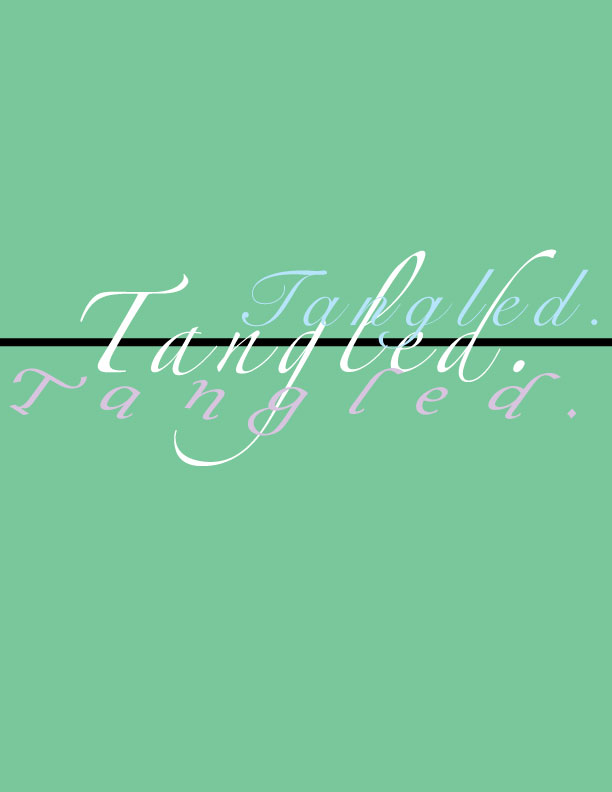
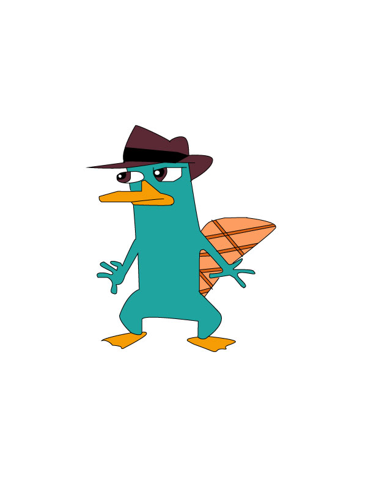
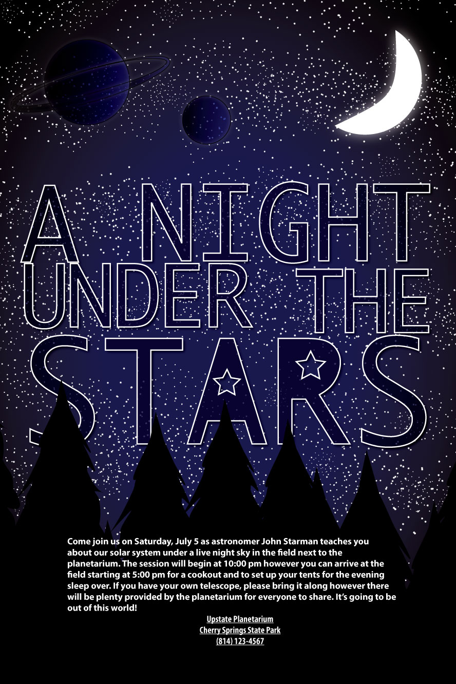

About me
Hi, my name is Tracey. I'm a sophomore at Burton high school in SF. At the moment, I'm an AME student. Although, I'm not exactly into art, I do enjoy admiring art or create new art projects from time to time. I'm hoping that in the future I can learn to love art and improve on certain areas in art.

Project #1
Word design project
In this project, I was given a word to express it visually or how I felt about this word when I see it. My word was "tangled". As you can tell, it's very simple but I liked how it turned out. When I first saw this word, I was thinking about a bunch of things tangled up, which is whyI had the word overlap each other to make it seem as if it's "tangled".

Project #2
Vector Cartoon Character
This was my first project as an AME student. For this project I had to pick a cartoon character and trace it by using the pen tool and other certain tools. I had a lot of fun during this project. When I was making this project, it brought back a lot of my childhood memories because I loved watching Phineas and Ferb when I was a child.

Project #3
The Social Justice Poster is a project where we pick a political issue and make a poster about it. I had a lot of challenges during this project. Specifically, the clipping mask part. Originally, I wanted to make the collage into some sort of school building but I was unable to do it for some reason. This was why the collage is just rectangled shape. But other than that, I liked how it turned out.
.jpg)
Project #4
Event Poster
For this project we made a digital poster from online tutorial videos. This was the project I struggled the most. I was extremely frustrated with this project because it took me an extremely long time to finish it. The instructions were also extremely confusing. But even though this project frustrated me a lot, I was still satisfied with the result since it doesn't look too bad. What made it more satisfying was that I was finally done with it.



{kind=link}